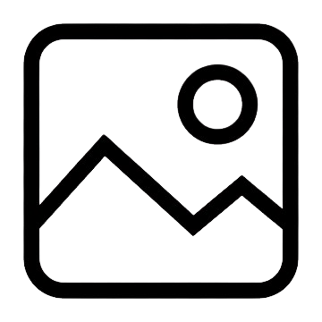

Original
Escala de Grises
Sepia
Brillo
Blanco y Negro
Negativo
Blur
Saturacion
Deteccion de Bordes
Sharpen
Bajorrelieve
Lapiz
Goma
Subir Foto
Descargar
Tamaño
Limpiar Lienzo
Bienvenido a Paint
¿Cómo querés comenzar?
Elija una de las siguientes opciones para comenzar
Lienzo en blanco
Comience un nuevo proyecto en un lienzo en blanco

Cargar imagen
Comience un nuevo proyecto desde una imagen en su galeria